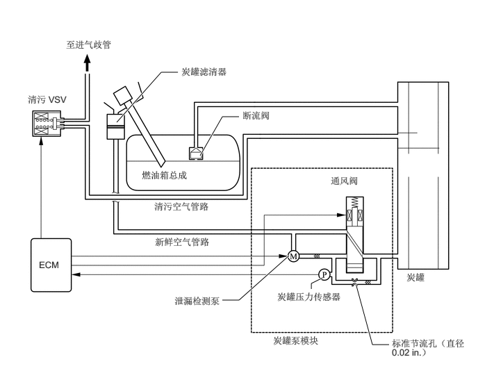

1.75,1.833 2.417,1.083
2.417,1.083 2.667,1.083
true
3,2.333 3.333,1.75
3.333,1.75 3.583,1.75
true
4.333,3.833 3.583,4.5
3.583,4.5 3.333,4.5
true
4.667,4.333 4.667,4.25
4.667,4.25 4.833,4.167
true
5.333,4.25 5.583,5.167
5.583,5.167 5.833,5.167
true
0.99,0.583 2.146,0.823
1.146,0.229
10
false
至进气歧管
0.417,1.406 1.188,1.635
0.76,0.219
10
false
清污 VSV
0.583,3.885 0.969,4.115
0.375,0.219
10
false
ECM
2.719,0.99 3.667,1.229
0.938,0.229
10
false
炭罐滤清器
3.635,1.646 4.448,1.885
0.802,0.229
10
false
断流阀
2.125,2.542 3.448,2.771
1.313,0.219
10
false
燃油箱总成
2.313,3.01 3.24,3.229
0.917,0.208
10
false
清污空气管路
2.323,3.542 3.25,3.76
0.917,0.208
10
false
新鲜空气管路
4.958,2.625 5.688,2.854
0.719,0.219
10
false
通风阀
2.615,4.427 4.01,4.677
1.385,0.24
10
false
泄漏检测泵
6.094,4.073 6.677,4.302
0.573,0.219
10
false
炭罐
4.156,4.365 5.302,4.76
1.135,0.385
10
false
炭罐压力传感器
4.094,5.021 5.552,5.271
1.448,0.24
10
false
炭罐泵模块
5.875,5.063 6.978,5.5
1.093,0.427
10
false
标准节流孔（直径 0.02 in.）